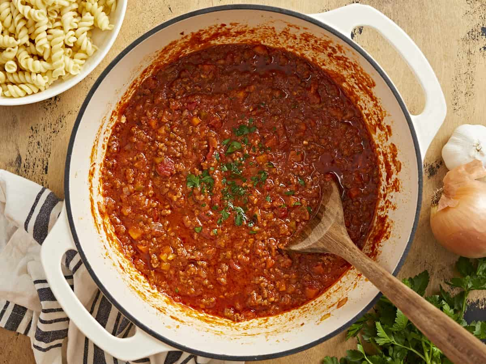

Description
Spaghetti bolognese, sometimes called spaghetti alla bolognese, or shortened to "spag bol", is a pasta dish that is popular outside Italy but not part of traditional Bolognese or even Italian cuisine in general. It consists of spaghetti served with a sauce made from tomatoes, minced beef, garlic, wine and herbs; sometimes minced beef can be replaced by other minced meats. In this sense the sauce is actually more similar to Neapolitan ragù from the south of Italy than the northern Bolognese version of ragù.
Ingredients
- 2 x 400g tins of plum tomatoes
- 1 teaspoon of dried oregano
- 2 fresh bay leaves
- 1 tablespoon of olive oil
- 4 rashers of smoked streaky bacon, finely chopped
- 500g of beef mince
- 75g of grated parmesan
Steps
- Put a large saucepan on a medium heat and add 1 tablespoon of olive oil.
- Add 4 finely chopped bacon rashers and fry for 10 mins until golden and crisp.
- Reduce heat and add the the herbs, then fry for 10 mins.
- Increase the heat to medium high, then add 500g beef mince and cook stirring for 3-4 mins until the meat is browned over.
- Bring to the boil, reduce to a gentle simmer and cover with a lid. COok for 1 hour and 15 minutes - stirring occasionally until you have a rich, thick sauce.
- Add 75g of grated parmesan, check the seasoning, and stir.
Back to homepage